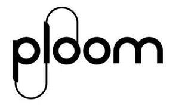

Trade Mark Journal No.2025/047 21 November 2025
UK00004291179 7 November 2025 (34)

- Class 34
- Tobacco, whether manufactured or unmanufactured; cigarettes; cigars; cigarillos; electronic cigarettes and parts thereof; herbal sticks for smoking; herbals for smoking; heated herbals for smoking; aroma capsules for cigarettes and/or heated sticks; flavorings (non-essential oils) for use in electronic cigarettes; flavorings (non-essential oils) for use in heated tobacco and non-tobacco products and nicotine products; e-liquid pods; liquid for electronic cigarettes; snus; snuff; smokers' articles namely tobacco tins, cigarette cases, ashtrays, pipes, pocket apparatus for rolling cigarettes, lighters for smokers, matches, cigarette boxes, tobacco boxes, snuff boxes, covers for cigarette packaging, covers for tobacco, herbal heating devices or e-cigarettes, covers for tobacco products, covers for nicotine products; cigarette papers; cigarette tubes; cigarette filters; electronic devices and parts thereof for heating cigarettes, tobacco sticks and nicotine sticks; electronic nicotine inhalation devices; oral vaporizing devices and devices for heating tobacco and tobacco substitutes for the purpose of inhalation; tobacco products to be heated; tobacco sticks to be heated; nicotine sticks to be heated; sticks containing tobacco substitutes to be heated; Oral nicotine pouches for use as a tobacco substitute, not for medical purposes; oral nicotine products in the form of strips, lozenges or tablets for use as a tobacco substitute, not for medical purposes; hookahs and parts thereof; electronic hookahs and parts thereof; liquids for electronic hookahs; steam stones for hookahs.
JT International S.A.
Representative: CMS Cameron McKenna Nabarro Olswang LLP